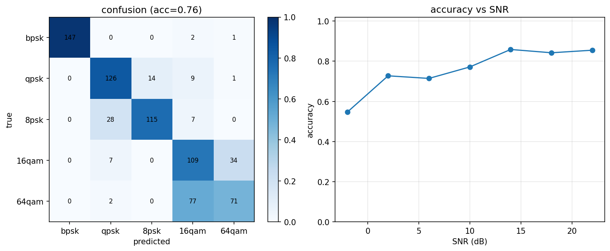

10 AMC 自动调制识别¶
代码：
src/phylayer/iqdata.py（数据集）、src/phylayer/amc.py（模型+训练） 实验：experiments/exp05_amc.py；GPU 训练：notebooks/amc_kaggle.ipynb一句话：给接收机加"眼睛"——不看帧结构、不看导频，直接对一段原始 IQ 波形判断它用的是哪种调制。
它解决什么问题¶
前面所有模块都假设"我知道对面发的是什么调制"。真实频谱监测/认知无线电/ 电子对抗场景里这个假设不成立：频谱上看到一个信号，先识别调制方式才能 谈解调——这就是 AMC（Automatic Modulation Classification）。
AMC 的学术分野两代：第一代是特征工程派——用瞬时幅度方差、相位差分 直方图、高阶累积量（cumulants）等手工统计量+浅分类器；第二代是深度学习 派——直接把原始 IQ 序列喂给 CNN/LSTM 让它自己学特征（O'Shea 2016 的 VT-CNN 开启了这条路）。本项目走第二代：把前面 M1–M3 造的链路反过来当 数据工厂，给 1D-ResNet 供训练样本。
数据集：不是星座图，是"受损的 IQ 波形"¶
iqdata.make_iq_sample 每个样本走一遍真实信道链：
随机比特 → 调制 → RRC 成型(sps=8) → 50% 概率多径 → 随机 CFO(±5e-3)
→ 随机相位 → AWGN(随机 SNR) → 随机起点截 1024 点 → 功率归一
为什么给原始 IQ 而不给星座图：星座图需要先完成定时+CFO 同步—— 等于把接收机最难的活先干完，AMC 就失去了意义；而且干净星座图会让网络 学到"像素模板匹配"这种捷径。受损 IQ 波形逼网络学调制方式的物理本质： PSK 族星座恒模（星座点等模）、QAM 的幅度-相位联合分布、不同阶数占据 带宽相同但统计形状不同。
5 个类别：bpsk / qpsk / 8psk / 16qam / 64qam（故意包含两对"近亲"：
QPSK↔8PSK 都是恒模星座（星座点等模），16QAM↔64QAM 都是方形 QAM——最难的子问题就在
族内细分，这决定了混淆矩阵该长什么样）。
模型：1D-ResNet¶
(2,1024) → Conv1d(2→64,k7)+BN+ReLU
→ 4 × [MaxPool2 + ResBlock64 + ResBlock64]
→ AdaptiveAvgPool → Linear(64→5)
- 输入两通道 I/Q：不调成幅度/相位——让网络自己学特征，不要人替它 做可能丢信息的变换；
- ResNet 残差块：让网络能加深而不退化（跳跃连接保梯度）——通信 IQ 分类的标准 backbone（O'Shea 的 VT-CNN 和 ResNet 变体是 RML 数据集上的 baseline）；
- 1D 卷积在时域扫：卷积核学到的等价于各种瞬时特征/高阶统计量的 可微分版本——这正是 CNN 相对手工特征的优势：不用人工设计统计量；
- 总参数 ~33 万，CPU 18 epoch 约 1 分半，Kaggle T4 上几十秒。
实验结果¶
exp05_amc.py：训练 5×800 样本（SNR 均匀采样 -4~24dB），测试 5×150。

- 混合 SNR 总准确率 ~76%，高 SNR 区段 ~85%（exp05 实测，CPU 小样本 18 epoch）；
- 混淆矩阵完美呈现教科书预测的结构：BPSK 几乎不错；QPSK↔8PSK 互相 混淆（恒模星座，区别只在相位集合大小）；16QAM↔64QAM 互相混淆（方形 QAM 内部按星座规模区分是最难子问题）。
这个结果本身就是面试弹药：CNN 自己"发现"了调制分类学里的经典混淆对 ——和人类专家用手工特征（瞬时幅度方差、相位差分直方图）得到的结论 一致。说明网络学到的是物理特征，不是数据伪影。
Kaggle GPU 全量训练¶
同一模型在 Kaggle T4 上放开数据量（每类 4000 训练 / 1000 测试，25 epoch， torch 2.10+cu128，约 3 分钟）：混合 SNR 准确率 76.9%，高 SNR 端 ~88%。

-4dB 处 ~55% → 22dB 处 ~88%，曲线形态符合"低 SNR 靠恒模/幅度粗分类、
高 SNR 才能分辨方形 QAM 内部规模"的物理直觉；混淆结构随数据量放大依旧
稳定（PSK 族内、QAM 族内），说明瓶颈在物理可分性而非样本量。
复现路径：notebooks/amc_kaggle.ipynb（Kaggle → New Notebook → GPU T4）。
代码走读（按调用顺序）¶
Xtr, ytr, _ = generate_dataset(CLASSES, 800, 1024, (-4, 24)) # 数据工厂按需生成
model = AMCNet(n_classes=5) # 1D-ResNet
train_model(model, Xtr, ytr, epochs=18) # AdamW + CE
pred = predict(model, Xte) # 混淆矩阵用 confusion_matrix
面试可能怎么问¶
Q：为什么用原始 IQ 而不是星座图/谱图？ A：星座图需要先同步（定时+CFO）——把最难的问题前置了；原始 IQ 让网络 从信号统计特性出发，端到端。工程上也有星座图+图像 CNN 路线，但它要先 完成接收机大部分工作，丧失了"AMC 辅助解调"的意义。
Q：训练数据怎么来？没有标注真实信号怎么办？ A：本项目的核心优势——仿真数据工厂：物理层链路反过来当数据生成器， 可控扫 SNR/CFO/多径。学术界的标准做法也一样：O'Shea 的 RadioML （RML2016）数据集全是仿真生成。
Q：sim-to-real gap？ A：仿真数据训练的模型上真实信号会掉点——信道模型不全（相位噪声、IQ 不平衡、功放非线性）。缓解：域随机化（把更多失真随机加进训练数据）、 真实数据微调。坦承边界并给出改进方向，比装作没问题更得分。
Q：为什么不是 Transformer？ A：可以做，但 1024 点 IQ 序列上 CNN 的局部归纳偏置已够好且参数少两个 量级；序列建模（LSTM/Transformer）更适合超长序列或协议级特征。
Q：混淆矩阵说明什么？ A：对角线=各类检出率；非对角线揭示混淆结构。这里恒包络族（PSK）内部 混淆、方形 QAM 内部混淆——与手工特征方法的已知结论一致，说明网络学 到的是物理特征不是数据伪影。
Q：低 SNR 时为什么准确率下限不是 20%（五类随机猜）？ A：因为调制族间的差异（恒包络 vs 变幅度）在低 SNR 仍可分辨——网络能 先粗分出"这是 PSK 族"或"这是方形 QAM"，只在族内细分时接近随机。这 正是分层分类器存在的理由：先分族再分阶。